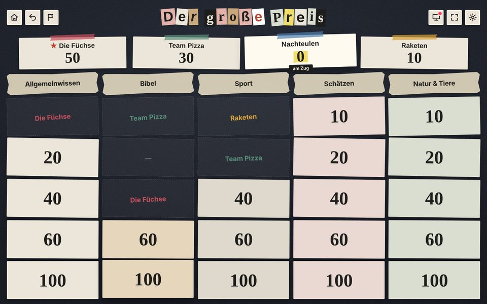
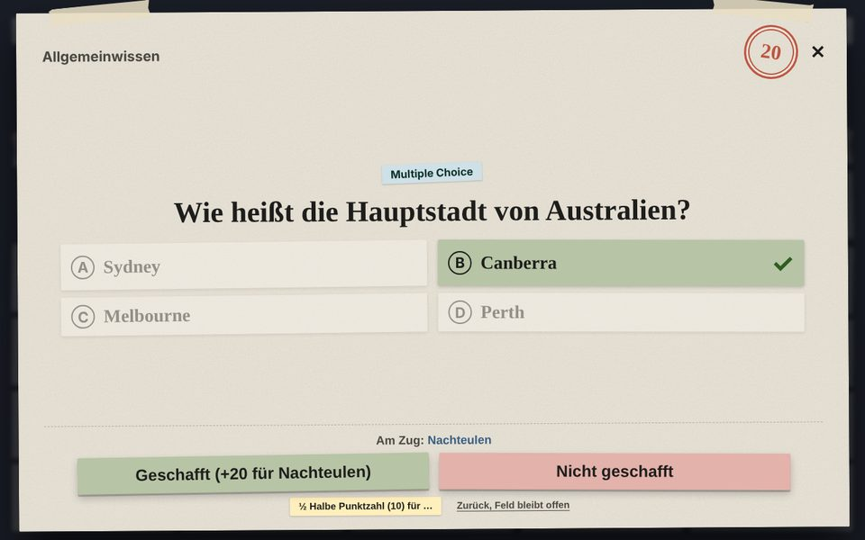
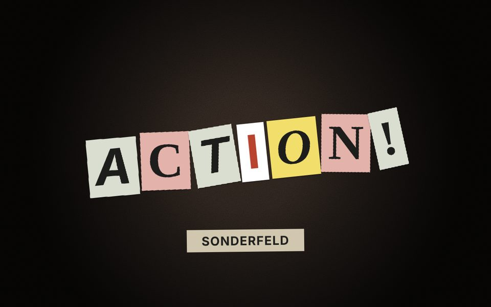
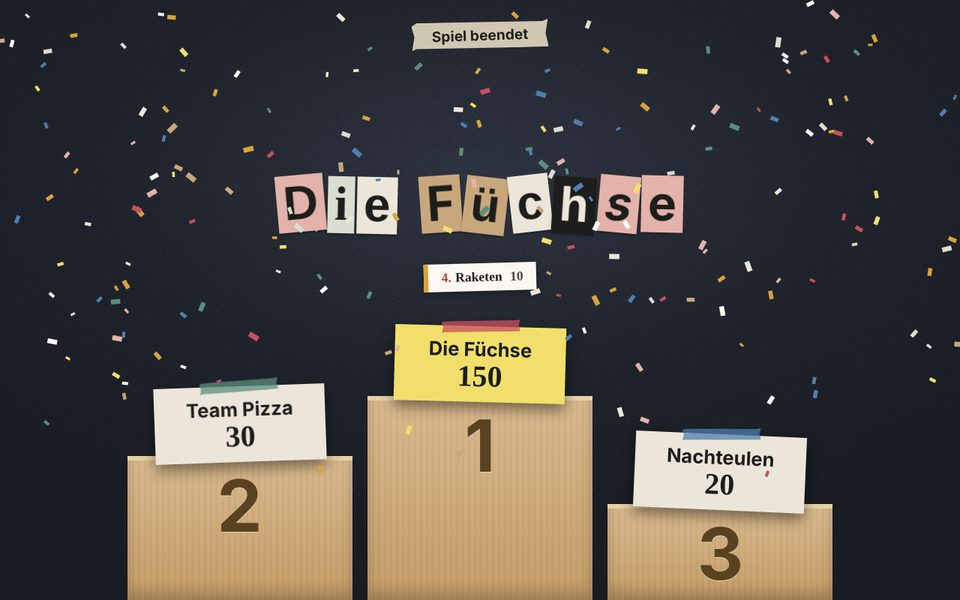

Vorlage auswählen, Gruppen eintragen, losspielen. Ein Quizabend steht in wenigen Minuten.
Schreib eigene Fragen und Aufgaben, speichere sie als Vorlage und gib sie an andere weiter.
Einmal geöffnet, funktioniert alles auch im Jugendraum ohne WLAN.
Keine Anmeldung. Alles bleibt auf deinem Gerät, nichts wird hochgeladen.
Große Schrift, klare Felder und eine Siegerehrung, die den ganzen Raum mitnimmt.
Fragen, Multiple Choice, Schätzfragen, Aufgaben und Überraschungsfelder machen aus einem Quiz eine Show.
Mit einem Laptop am Beamer bekommst du zwei Bildschirme: deinen zum Steuern und den Beamer für alle anderen.
Laptop anschließen und die Anzeige auf „Erweitern“ stellen, nicht auf „Spiegeln“. Unter Windows geht das mit Windows-Taste + P, am Mac in den Systemeinstellungen unter „Displays“.
Öffne „Der große Preis“ im Browser und tippe unter „Einstellungen“ auf „Zuschaueransicht zeigen“. Im Spiel geht das auch über das Bildschirm-Symbol oben rechts. Es öffnet sich ein zweites Fenster.
Zieh das neue Fenster auf den Beamer und klick dort auf das Vollbild-Symbol. Sobald beide verbunden sind, heißt der Knopf „Zuschaueransicht verbunden“.
Ehrenamtliche in der Jugendarbeit haben wenig Zeit und selten viel Technik. Deshalb soll ein guter Spieleabend so einfach werden wie möglich: das Spiel am Handy bedienen, schnell mit dem Beamer verbinden und auch spontan auf gutes Material zurückgreifen können.
Bis dahin ist es noch ein Stück. Im Moment optimieren wir alles für Laptop und PC, denn dort lässt sich am besten ausprobieren, was im Gruppenraum wirklich funktioniert. Wenn das rund läuft, ist das Handy dran, damit es dort genauso gut klappt.
Mehrere Gruppen treten gegeneinander an. Auf dem Spielbrett gibt es Kategorien mit Feldern von 10 bis 100 Punkten. Je mehr Punkte, desto schwerer. Wer am Ende die meisten Punkte hat, gewinnt.
Farbe antippen zum Ändern. Den Punktestand kannst du hier auch von Hand korrigieren.
Klassisch: Die Lösung bleibt verdeckt, bis du auf „Lösung zeigen“ tippst. Multiple Choice: Antwort antippen zum Einloggen, dann auflösen. Bei beiden kann eine andere Gruppe die halbe Punktzahl bekommen. Schätzfrage: Jede Gruppe gibt eine Zahl ab, wer am nächsten dran ist, gewinnt. Aufgabe: Nur die Gruppe am Zug spielt. ACTION: Alle Gruppen spielen mit, du wählst den Gewinner. Auf dem Spielbrett sieht das Feld normal aus, erst beim Antippen gibt es die Überraschung.
Alles wird automatisch auf diesem Gerät gespeichert. Zum Sichern oder Übertragen auf ein anderes Gerät: Export kopieren und z. B. in eine Notiz einfügen.
Ist das iPad im WLAN, lädt die App neue Versionen automatisch im Hintergrund. Ohne Internet läuft sie einfach mit der zuletzt geladenen Version weiter.